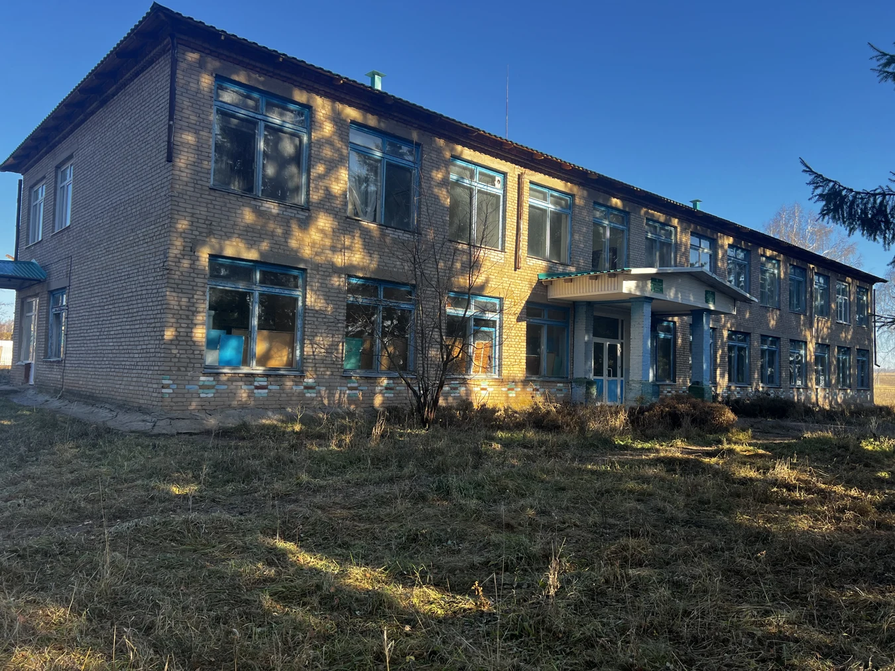

Координация
Проектный офис сельских территорий
Своё дело
на своей земле
Мы хотим, чтобы в сёлах Башкортостана люди могли учиться, работать и начинать своё дело. В Чишминском районе мы предлагаем начать с бывшей школы в Верхних Термах и открыть в ней мастерские для жителей и фермеров.
Проекты офисаПроекты
Начинаем в Чишминском районе. Здесь мы готовим концепцию центра и молодёжную программу. В Уфе команда уже провела занятие Урбаншколы.

Центр агрокреаномики
Предлагаем открыть в бывшей школе мастерские, где жители, фермеры и молодые авторы смогут проверять свои идеи.
Посмотреть концепцию ↗
Башкирское поле экспериментов
Молодёжная программа в Чишмах на стыке аграрной практики, технологий и творчества.
О программе ↗
Урбаншкола
Через карты, игры и обсуждения школьники учатся договариваться о будущем знакомых мест.
Об Урбаншколе ↗Команда
Пример состава проектного офиса. В карточках пока указаны условные роли.
Исследования
Специалист по развитию территорий
Образование
Куратор программ
Материалы
Концепция территории и материалы программы «Башкирское поле экспериментов».
О компании
ООО «Мироселье»
Республика Башкортостан
Реквизиты
- Наименование
- ООО «Мироселье»
- ИНН
- 0276185285
- ОГРН
- 1250200037230
- Электронная почта
- miroselye@mail.ru